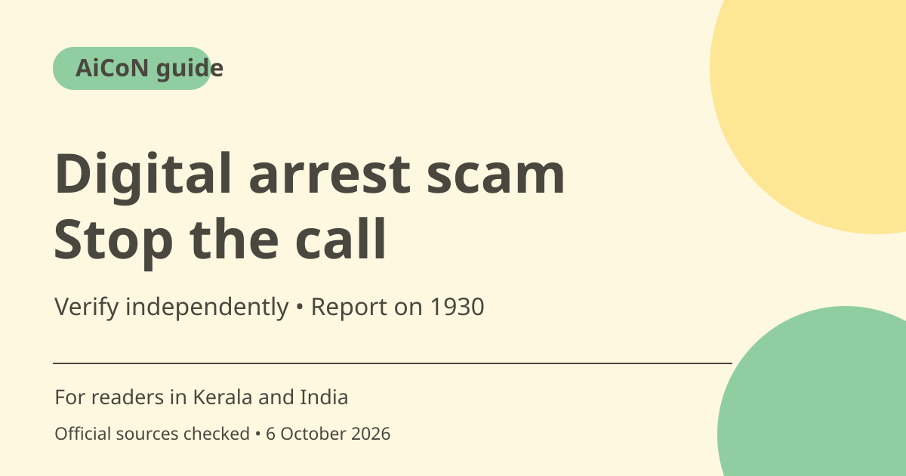

Digital arrest scam: what to do and how to report in India
A caller threatening to keep you under arrest on a video call is using a recognised scam tactic. I4C's advisory says there is no concept of digital arrest under Indian law. Stop, verify through an independent police contact and report cyber fraud promptly.

What is a digital arrest scam?
I4C's advisory describes criminals posing as police, CBI, narcotics, RBI, telecom, Enforcement Directorate or other officials. They allege a parcel, SIM, Aadhaar or bank-account connection to a crime, then use fear to demand money. A video background made to resemble a police station does not establish official identity.
Why the call feels convincing
The advisory says numbers can be spoofed. Scammers may claim a loved one is involved in a crime or accident and keep victims on Skype or WhatsApp until demands are met. A familiar-looking Indian number, uniform, identity card or official-sounding language is not independent proof. Do not use a contact number supplied by the same caller to verify them.
There is no lawful digital arrest
The March 2025 I4C advisory explicitly says there is no concept of Digital Arrest under Indian laws and real law enforcement will not arrest you digitally. This guide is a reminder based on that advisory, not a new October 2026 alert. It does not mean all electronic contact from an authority is fake; independently verify a genuine legal communication rather than trusting a video-call threat.
What to do if money is demanded
Do not transfer money to settle a fabricated case or prove innocence. Do not reveal OTPs, passwords, UPI PINs or other financial details. End the conversation and speak to a trusted relative or friend before taking any financial action. The advisory recommends contacting the nearest police station directly to check the claim and identity.
If you already paid
Report the fraud immediately through 1930 or cybercrime.gov.in as the official advisory recommends. Preserve transaction references, times, messages, caller handles and other evidence. Contact your bank through its verified app, card or official website to report the transfer. Fast reporting helps response efforts but does not guarantee that money will be recovered.
A practical family safety plan
For families in Kerala and across India, agree that a frightening call involving an arrest, accident or secrecy demand should be checked with another family member. Older relatives may benefit from keeping a trusted person's number easy to reach. Do not mock a victim: shame can delay reporting. Help collect evidence and use official reporting routes instead of a stranger promising paid recovery.
How to use it, step by step
- Stop the call or video session. Do not stay connected merely because the caller claims leaving is illegal.
- Do not send money or disclose personal and financial secrets. If you already shared access, contact the affected service through its official route.
- Speak to a trusted relative or friend. Verify any claimed case directly with the nearest police station using an independently obtained contact.
- If fraud occurred, call 1930 promptly or open cybercrime.gov.in yourself. Explain what happened and follow the official reporting process.
- Keep evidence such as transaction references, dates, amounts, messages and caller details. Do not delete the conversation before preserving relevant evidence.
- Report any payment to your bank through a verified channel. Keep acknowledgement details from the bank and cybercrime complaint.
- Ignore people who approach you promising guaranteed recovery for a fee. Follow up through the official complaint and bank channels.
Cost, eligibility and limits
| Official reporting | Use cybercrime.gov.in or 1930. No private agent is needed to submit your account of the fraud. |
|---|---|
| Money demand | An intimidation payment is not proof of innocence or a lawful way to close a case. |
| Recovery limits | Reporting does not guarantee recovery, a refund or a particular investigation outcome. |
| Scope | Based on the I4C advisory dated 6 March 2025, checked 6 October 2026. This is scam-safety guidance, not individual legal advice. |
Frequently asked questions
Can police arrest me through a video call?
I4C says there is no concept of digital arrest under Indian laws. Verify threatening claims through an independent police contact.
What if the caller knows my Aadhaar or name?
Knowledge of personal details does not authenticate the caller. Do not disclose more information or pay without independent verification.
Will reporting guarantee my money returns?
No. Report promptly and preserve evidence, but recovery is not guaranteed.
Official sources
Checked 6 October 2026. Features and prices can change. This is a guide, not a personal product test.